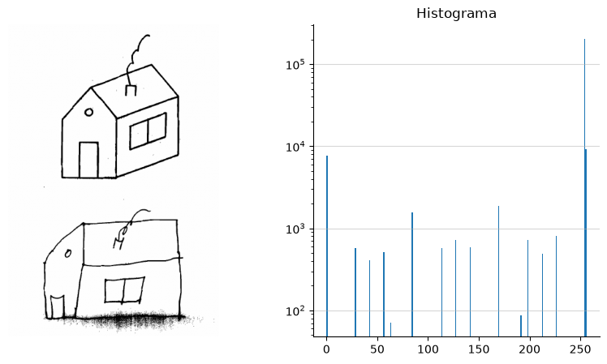
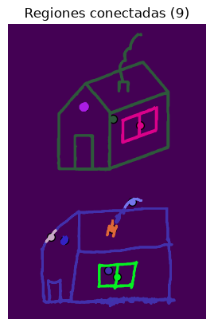
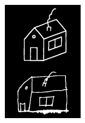
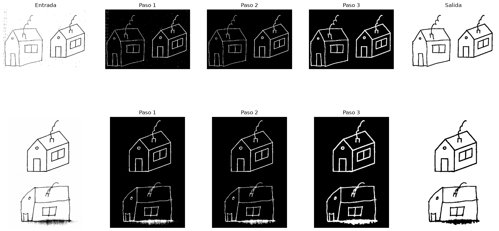

# Lanza la interfaz UI de la aplicación image-playground de forma local
!uv run miia-pec1 ui --port 54321 Eliminación de ruido
1.1 Ejercicio 1.1
La aplicación image-playground para realizar procesamiento de imágenes se encuentra desplegada en huggingface [1]: https://huggingface.co/spaces/vichel0creg0/image-playground.
También puede ejecutarse de forma local utilizando el comando:
1.2 Ejercicio 1.2
Para reducir el ruido, se ha diseñado un pipeline de cuatro etapas.
flowchart LR
A["Umbralización inversa"]
B["Filtro patrones de píxeles conectados pequeños"]
C["Dilatación"]
D["Inversión"]
A --> B
B --> C
C --> D
En la Figura 1.2 se muestra la primera etapa del pipeline, consiste en una umbralización binaria inversa. Esta operación permite eliminar tonalidades de grin intermedias y obtener una representación binaria en la que los trazos de los dibujos aparecen en blanco y el fondo en negro.


Para loa segunda etapa del pipeline se utiliza el procedimiento propuesto por Moracho [2], que se basa en el filtrado de los componentes conectados según su área.
En la Figura 1.3 se muestra como el número de componentes conectados se reduce de 83 a 9, eliminando gran parte de las pequeñas regiones asociadas al ruido.


Finalmente, Figura 1.4, se aplica una dilatación morfológica para aumentar ligeramente el grosor de la los trazos y reforzar las líneas que hayan quedado demasiado finas tras las etapas anteriores.

En la Figura 1.5, se presenta una comparación de las imágenes de entrada con los resultados obtenidos en cada etapa de pipeline.
